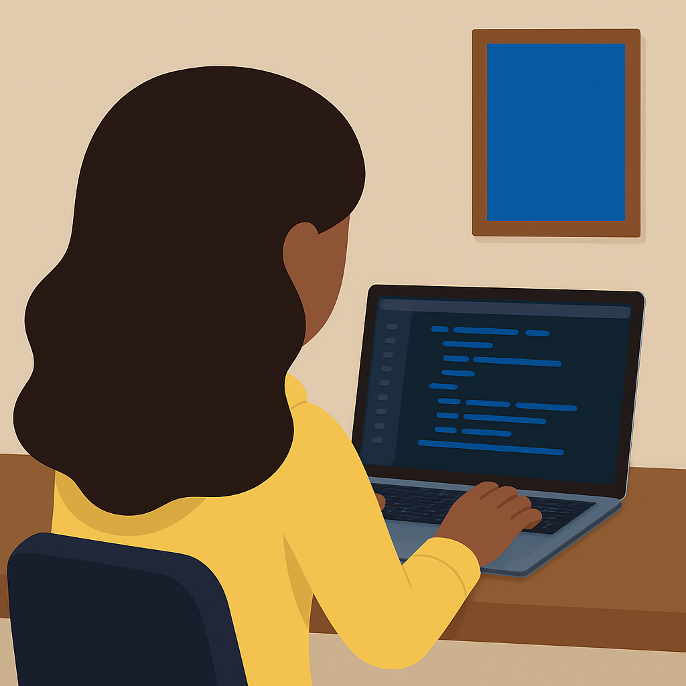
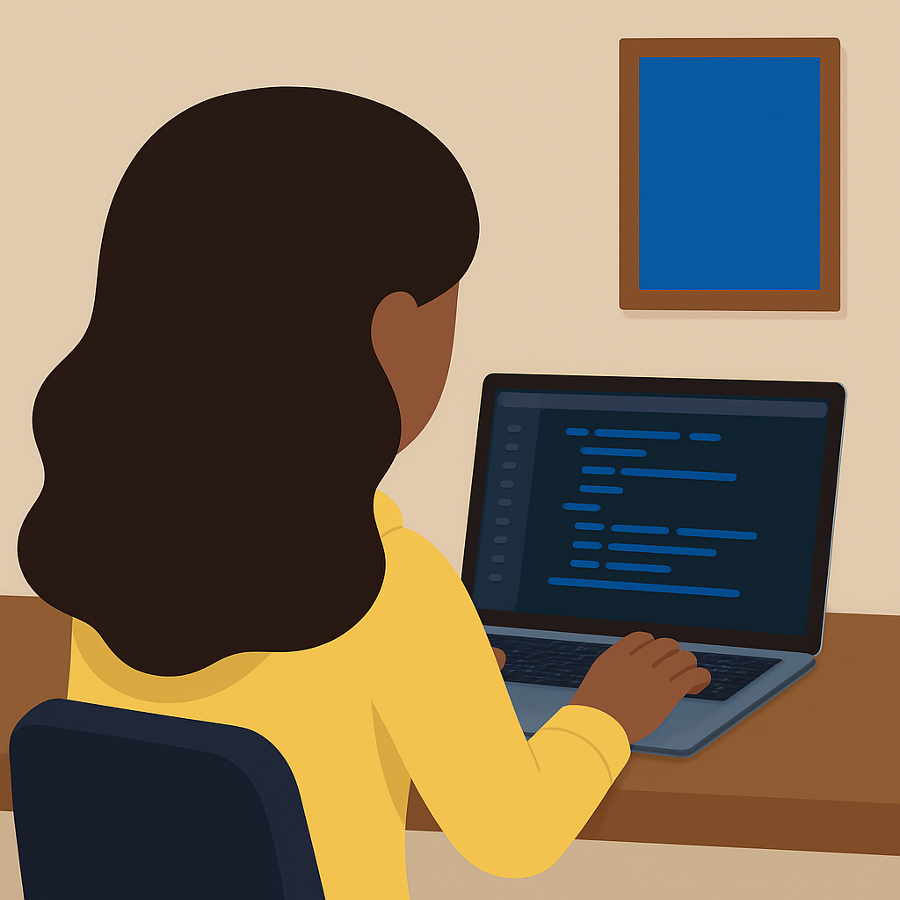

About Me
Hi, I’m Ayana! I’m a computer science graduate student at Stanford
University passionate about building technology that empowers and
includes. I did my undergraduate degree in
Symbolic Systems
(Human-centered AI specialization), combining psychology, education,
and philosophy with CS. My work today sits at the intersection of
education, technology, and equity, designing tools that create
meaningful learning experiences for everyone, especially those
historically left out of tech spaces.
Over three summers as a software engineering intern at Microsoft, I
worked on AI-powered tools for financial operations and cost
analysis, which honed my ability to build at scale while staying
rooted in user needs. Beyond work, I thrive on sharing knowledge.
Whether teaching coding workshops, mentoring young students through
volunteer organizations such as
Black Girls Code, or speaking about the power of representation in STEM, I love
sparking curiosity and confidence in others.
When I’m not behind my laptop, you’ll probably find me crocheting,
caring for my growing collection of succulents, or exploring new
corners of the world (I hope to hit all seven continents before
turning 30!).
At my core, I believe technology should not only solve problems but
also connect people and open doors. That vision drives everything I
create. See some of my work below!